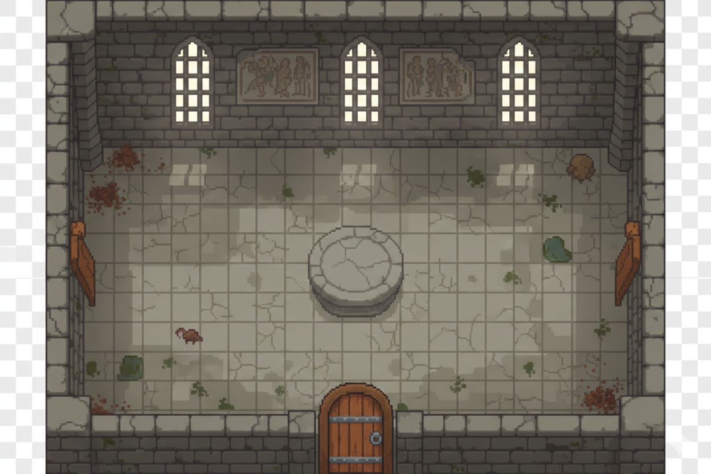

Lliçó 4: Construint Mons i Enfocant l'Acció
En aquesta lliçó aprendrem a crear l'escenari on es mourà el nostre personatge. Explorarem dues tècniques diferents per a crear pantalles i configurarem una càmera per a no perdre de vista la nostra heroïna.
1. Importat l'Aina a la Escena
Ara que ja tenim el nostre personatge configurat amb les seues animacions i codi, és hora de ficar-lo en
un món real.
Per a fer això, crearem una nova escena anomenada Main (o World) que serà el
contenidor del nostre joc.
Player (l'Aina) dins de la
teva escena principal arrossegant el fitxer .tscn des del FileSystem al panell d'Escena.
2. Pantalles amb Sprite2D: L'enfocament Estàtic
La forma més senzilla de crear una habitació és utilitzant una imatge ja completament dibuixada. A
Godot, fem servir el node Sprite2D per a això.
Materials Necessaris
Dins trobaràs room.png (l'habitació buida) i assets.png (mobles i
objectes).
Passos per a crear la pantalla:
- Afig un node Sprite2D com a fons i carrega
room.pnga la propietat Texture. - Per als mobles i objectes, pots afegir més nodes Sprite2D fills.
- Si una imatge (com
assets.png) conté molts objectes, pots utilitzar la propietat Region en l'inspector per a retallar només l'objecte que t'interessi.

3. Pantalles amb TileMapLayer: L'enfocament Professional
El mètode anterior és limitat si volem crear nivells grans o reutilitzar parts. El sistema de TileMaps ens permet "pintar" el nivell utilitzant una graella de rajoles (tiles).
Materials Necessaris
A partir de Godot 4.3, el mètode recomanat és utilitzar el node TileMapLayer.
Configuració del TileSet:
- Crea un node TileMapLayer.
- En l'inspector, a la propietat Tile Set, tria "New TileSet".
- Configura la mida de la cel·la (Tile Size). Per a aquest recurs és de 16x16 píxels.
- Al panell inferior "TileSet", arrossega la imatge del tileset. Godot et preguntarà si vols crear les rajoles automàticament; digues que sí.
Pintant el nivell:
- Selecciona el panell inferior "TileMap".
- Tria una rajola i comença a "pintar" al visor 2D.
- Pots tenir múltiples nodes
TileMapLayerper a gestionar diferents capes (una per al terra, una altra per a les parets, etc.).
4. Camera2D: No perdis de vista l'acció
Si has provat el joc, veuràs que l'Aina es veu molt menuda al centre d'una pantalla blanca enorme (o que surt de la pantalla). Per a solucionar-ho, necessitem una càmera.
Com afegir la càmera:
- Ves a l'escena del
Player(Aina). - Afig un node Camera2D com a fill del CharacterBody2D.
- En l'inspector, assegura't que la propietat Enabled estiga activada.
Configuració recomanada:
- Zoom: Si el teu joc té una estètica Pixel Art, un zoom entre 3 i 4 sol quedar molt bé per a veure els detalls.
- Position Smoothing: Activa "Enabled" en aquesta secció per a que el moviment de la càmera siga suau i no a salts.
📝 Tasca: Crea el teu Món
Ara que saps com crear entorns, dissenya el primer nivell del teu joc.
- Crea una escena principal i importa l'Aina.
- Implementa l'habitació utilitzant el mètode que prefereixis (Sprite2D o TileMapLayer).
- Configura la Camera2D amb un zoom adequat.
- Assegura't que l'Aina no pot sortir de les parets (revisant les col·lisions que vam veure a la lliçó 2).
- Pujar el projecte comprimit a Aules.